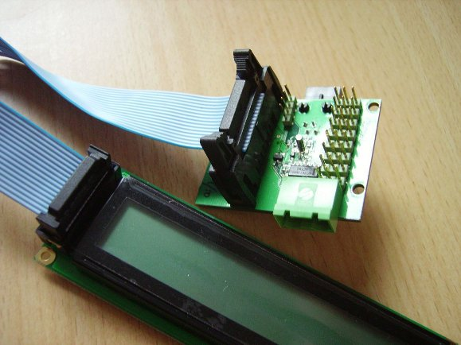

PWM Board
Servos are mechanical armatures which can be commanded to move to a given angular position. They are useful when positional accuracy is required, for example when attempting to pick up a token from the arena floor. The PWM board allows you to control multiple servos on your robot. To see what can be achieved with servos see this Servo Robot Arm project. If you are wondering why it is called the 'PWM Board', this is because PWM stands for Pulse Width Modulation which is the signal type used to control servos.
In addition to driving servos, the PWM board has an alphanumeric display which can display arbitrary lines of text - very useful when debugging your robot!
Board Outline
The PWM board outline is shown below in Figure 1:

Figure 1 - Outline of PWM Board (click for full scale image)
Technical Specification
- Provides 6 independent servo channels
- Servos must be rated 5 Volts
- LCD Alphanumeric module with 2 lines of 24 characters
Connecting Servos
Servos are connected to the PWM Board using the bank of vertical pin headers on the top side of the board as shown in Figure 2. Each row of three pins corresponds to a single servo output. Be careful to ensure that the polarity is correct before connecting. Almost all servos come with this 3-wire connector and you should not need to do any extra work to connect them to the PWM Board.

Figure 2 - Connecting a Servo to the PWM Board
Duplicate Outputs
Although there are eight rows of pin headers on the PWM Board, the last two headers are duplicates of servos 4 and 5 - this is illustrated in the board outline. Unless you need two servos to behave identically, you should not need to use these duplicate outputs.
The LCD Module
During testing you may want to write text to the LCD from within your python robot code. This could help to determine how far into your program you are. Other possibilities include:
- Write a message to LCD when camera detects a blob
- Writing error messages to the LCD
- Show alert when sensors detect wall/ball
- View JointIO input/output status
The display supports pages of text called 'screens'. You can have up to four different 'screens' at the same time however, only one will be visible on the display. Pressing the push switch on the board allows you to cycle through each screen in turn. This is useful since you could dedicate a screen of text to each module (vision, motor, jointio, pwm).
Connecting the LCD Module to the PWM Board
The LCD module connects to the screen using the blue ribbon cable supplied in your kits. The cable can only be connected in one orientation, so be sure to line up the connectors correctly. Figure 3 shows how to connect your LCD module to your PWM board.
WARNING: Do not connect/disconnect the LCD from the PWM board whilst your robot is switched on!

Figure 3 - Connecting the LCD module to the PWM Board
Troubleshooting
Servos Do Not Move
Have you ensured the polarity of the servo connector matches with Figure 1? Is the 5V rail connected to the Power Board? Is your servo connected to the correct pin header?
PWM Screen Is Blank
Have you connected the LCD module to the PWM Board using the ribbon cable as in Figure 3? Is the 5V rail on the PWM Board connected to the Power Board? Are you looking at the correct 'screen'? - cycle through the screens by pressing the button.
Programming Interface
A programming interface is a set of rules explaining how you can control a specific module from within your robot's python code.
Controlling Servos
A servo's armature (a white plastic 'X' sticking out of the top) can move between two fixed angular positions - these will vary from servo to servo. In order that the programming interface is the same for all possible servos, in your code you set the position as a percentage of the two extremes.
# set servo SERVO_NUMBER to position POS where: 0.0 <= POS <= 100.0
setpos(SERVO_NUMBER, POS)
# Also accessible through:
pwm[SERVO_NUMBER] = POS
Both lines of code above achieve the same effect of setting the specified servo (dictated by 'SERVO_NUMBER') to the specified position (dictated by POS). Remember the position is a percentage and must be in the range 0≤POS≤100. The SERVO_NUMBER corresponds to the servo output numbers shown in the board outline and must therefore be in the range 0≤SERVO_NUMBER≤5
Having set a servo to a particular position, you may need to read its current position later in you code. To do this you can use either of the following two methods:
# read servo position - returns servo position
readpos(SERVO_NUMBER)
# also returns the servo position
pwm[SERVO_NUMBER]
Calibrating servos
When using servos on your robot you might need to calibrate them so that they move to an exact position, corresponding to opening a gate or dropping a token. To achieve this you will need to try multiple values until you find one that works. Perhaps you could automate this task by writing a program to periodically increase the servo position and write the current value to the screen
Writing to the screen
You can write to the screen at any point in your code which is useful for printing the values of program variables, digital/analogue inputs etc. in real time. Each screen on the LCD consists of two lines of text. Any text that overruns the size of the screen will not be displayed. There are two methods of writing to the screen, both achieve exactly the same thing:
# Set screen 0 to read "badgers and jam"
lcd[SCREEN_NUMBER] = "badgers and jam"
# the following also achieves the same result
setlcd(SCREEN_NUMBER, "badgers and jam")
When writing to the LCD module you must specify both the text to be written and the screen it should be written to. Valid screens are 0,1,2,3. You can force text to appear on the bottom line by using the end of line character '\n' in your string of text:
# you can force text to appear on the bottom line
lcd[0] = "Top\nBottom"
# the screen will then look like:
# ------------------
# |Top |
# |Bottom |
# ------------------